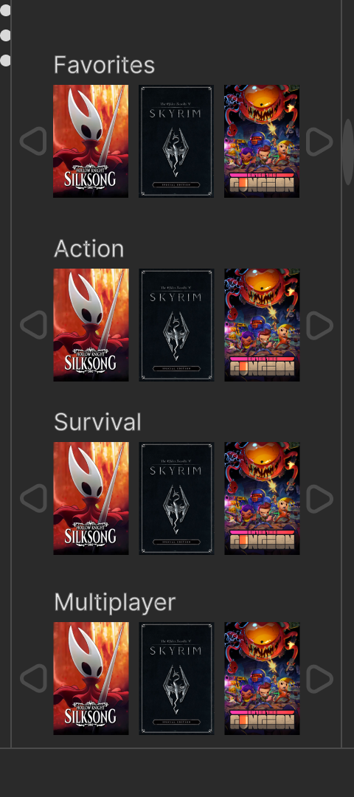
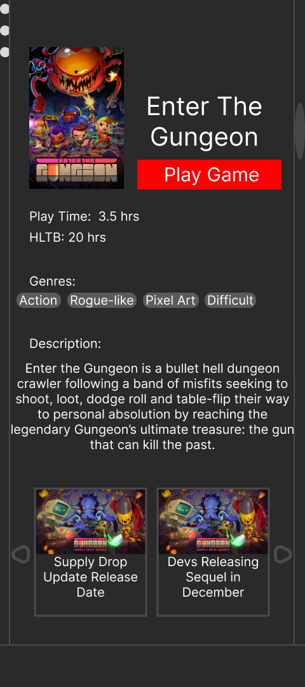
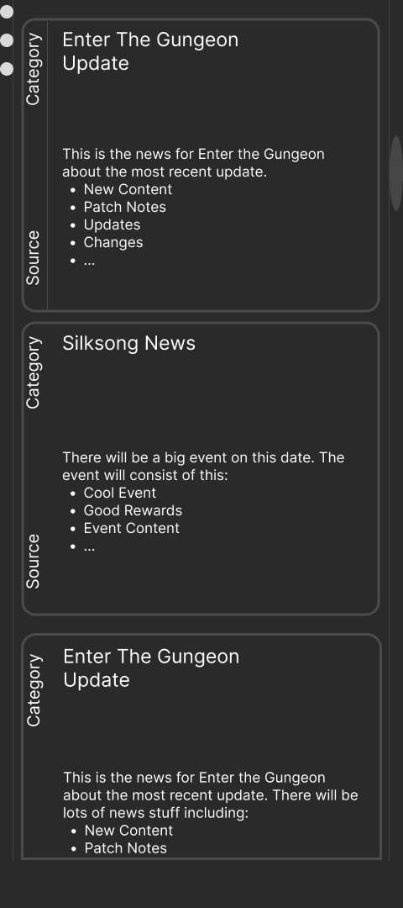
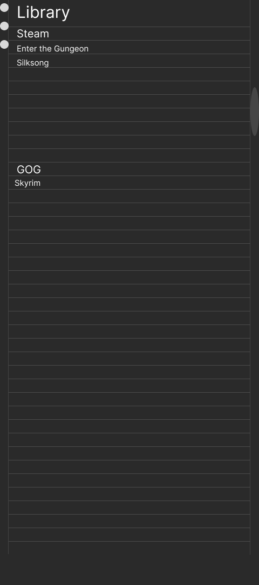
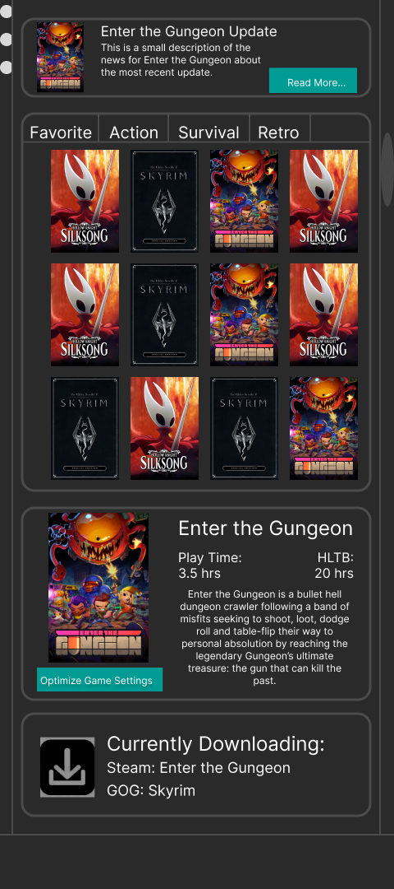
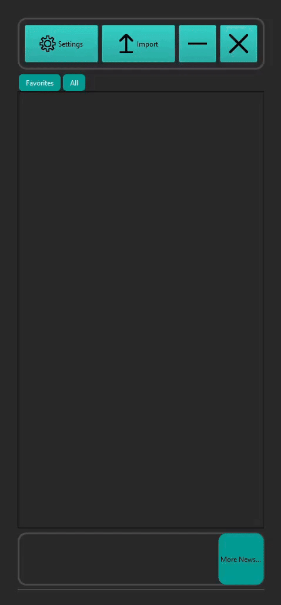
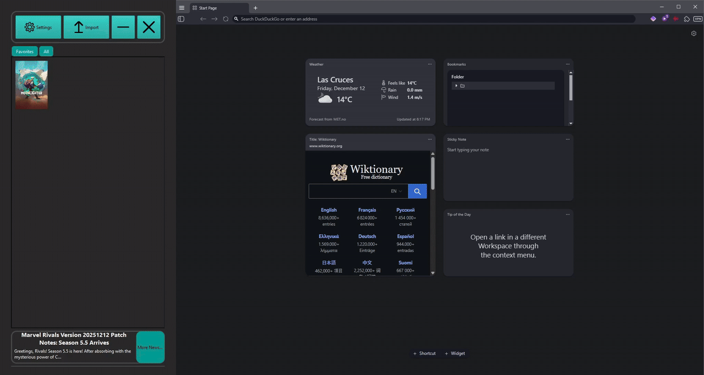

SHELF LAUNCHER
A Gaming Launcher.
A launching pad for games added by the user. Its main feature is that it's attached to the side of the user's monitor. Displays games with their cover art and launches from the app. Has a secondary menu to display two of the most recent games sorted by time and within a thirty-day time window.
Motivation
I wanted an app to hold my library of multiple launchers along with miscellaneous games I have installed on my PC. Rather than use already existing applications like playnite or similar, I wanted an application that would stick to the side of a monitor and disappear when not in use, similar to how the windows start menu works. I also wanted a place to easily see any new articles to related games I own.
Online Study
For our Online Study, we logged reddit posts pertaining to what a user would want from our type of application, third-party libraries. Most of the information we found was posts discussing 2 of the popular options. Playnite and Lutris. Playnite is a traditional third-party launcher with a wide list of features and Lutris is a launcher focused on compatibility with running games on Linux. We decided to scrap most of the features of Lutris as it was pretty basic and focused on compatibility. We then focused on the aspects that user liked about playnite. This being the ease of importing games and how they displayed games. We also recorded some features that users liked from main marketplaces like Steam. This being the ability of getting news concerning games you own on the library screen that we later implemented.
Prototyping Phase
We prototyped how it would look using Figma.
We made two options and decided on our future route based on user preferences.
The top option is Version 1, and the bottom option is Version 2.
Both versions had a news and full library menu but Version 1 had an extra menu that would
appear whenever you clicked a game.





User Studies 1 Results
We asked people questions pertaining to the Prototype on Figma about its
general aesthetic and how they feel about third-party launchers.
Of the 2 Versions, 3 preferred Version 2 and 2 prefered Version 1, the remainder had no explicit thoughts.
We found that most of the interviewees had no interaction with third-party launchers.
Thoughts we noted were the liking of the idea about size and placement of the application.
Some of the interviewees also liked the color scheme.
A suggestion we received was that Version 2 could use a submenu that was provided with Version 1.
we went with Version 2.
User Studies 2 Results
This time we did not ask about Version 1 but asked about concerning functionality and how we could improve it.
We were more focused on suggestions we can receive.
Suggestions we took note of was more implementations of color schemes, making a panel on
the home screen contain news, move the buttons to the top, indicating what platforms a game used,
and a journaling feature.
We implemented most of the suggestions, but due to time contraints on the project, we were not able to implement the last two.
Final Project
This is what the final result looks like.

